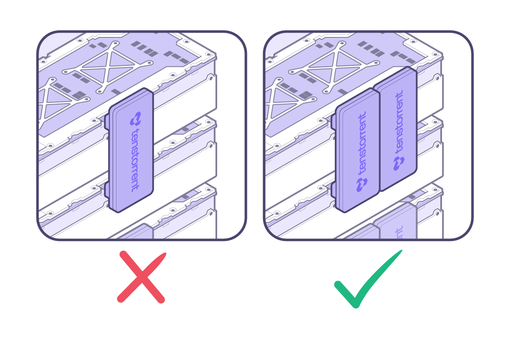

Warp 100 Bridge
Compatibility
The Warp 100 Bridge (TX-01002) is compatible with the following AI Graph Processor cards:
Wormhole™ n150d with Active Cooler (TC-02002)
Wormhole™ n150s with Passive Cooler (TC-02001)
Wormhole™ n300d with Active Cooler (TC-02004)
Wormhole™ n300s with Passive Cooler (TC-02003)
Each card supports up to two Warp 100 Bridges.
NOTE: n300d and n300s cards feature 2.5-slot coolers and will only be able to use the triple-slot Warp 100 Bridge.
Installation
Warp 100 Bridges are typically pre-installed in systems. However, if they require removal/replacement/reinstallation, they are keyed to be installed in a specific orientation. The Tenstorrent logo on the bridge should be rotated 270° (or -90°) as shown below:

Do not try to install it in the opposite orientation, as you risk damaging the card, your system, and the Warp 100 bridge.